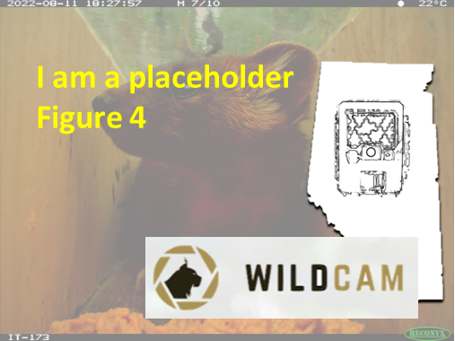

Camera height, angle, direction#
Hint
: The height from the ground (below snow) to the bottom of the lens (metres; to the nearest 0.05 m). : The cardinal direction that a camera faces. Ideally, cameras should face north (N; i.e. ‘0’ degrees), or south (S; i.e. ‘180’ degrees) if north is not possible. The Camera Direction should be chosen to ensure the field of view (FOV) is of the original FOV target feature. : The degree at which the camera is pointed toward the FOV Target Feature relative to the horizontal ground surface (with respect to slope, if applicable).
Camera placement
Camera Height
The Camera Height is the height from the ground (below snow) to the bottom of the lens (metres; to the nearest 0.05 m). Cameras should be positioned and secured to an attachment point at ~0.5–1 m height (from the ground to the bottom of the lens; Meek et al., 2014). The most appropriate Camera Height will be influenced by the terrain (e.g., slope), the angle of the tree, as well as the Target Species. Cameras placed closer to the ground reduce the probability that large animals (e.g., moose) will be fully in the frame in the photos. Similarly, if the camera is placed too high, only larger animals will activate the motion detector, and smaller species may be missed (e.g., hares, squirrels, marten) (Meek et al., 2016). The user should ensure that the Camera Height adequately detects motion at a specified Walktest Distance (m) and Walktest Height (m). If snow is a consideration, users may need to place cameras higher or plan to revisit seasonally to adjust as needed, being sure to record adjustments that could affect detection probability.
Camera angle
The camera angle is the degree to which the camera is pointed towards the FOV Target Feature relative to the horizontal ground surface (with respect to slope, if applicable). The camera angle differs from the camera viewshed angle, which is the area visible to the camera as determined by its camera lens angle and trigger distance (Moeller et al., 2023).
Cameras should be angled slightly downward, such that they should be able to detect both small and large species at a target distance of approximately 3–5 m from the camera and/or the user ensures that the angle adequately detects motion at a specified Walktest Distance (m) and Walktest Height (m). Cameras should not be angled upwards, as upward facing angles will result in fewer detections, especially of smaller species (Glen et al., 2013). If snow is a consideration, users may need to angle cameras higher or plan to revisit seasonally to adjust as needed, being sure to record adjustments that could affect detection probability.
Camera Direction
The Camera Direction is the cardinal direction that a camera faces. Cameras are usually positioned to maximize detections of the Target Species (except when random placement is required).
The direction a camera faces is an important consideration because it affects the amount of light that reaches the area, which has implications for both detection probability and image quality (reduced quality via sun glare). Ideally, cameras should face north (N, i.e. “0” degrees), or south (S; i.e. “180” degrees) if north is not possible. Sun glare is the most problematic for cameras that face east or west by causing false triggers unless there is thick tree cover blocking the sun (standing water may also produce similar problems with sun glare).
The camera direction should be chosen to ensure the field of view (FOV) is of the original FOV target feature. Generally, cameras should be placed perpendicular to the expected direction of animal travel (e.g., along a game or human trail). Since there is a delay between when an animal enters the camera’s detection zone and when it captures an image, placing the camera perpendicular to the trail increases the likelihood that an animal will be in the frame when the camera triggers (Apps & McNutt, 2018). The delay is typically < 1 s, depending on the trigger speed for a particular camera and the settings applied. The size of the detection zone will depend on the Camera Make and Camera Model.
Field of View (FOV) and Walktest
It is important to try to ensure an unobstructed Field of View (FOV) from the camera to avoid impairing the detection rates of wildlife (or humans). Moll et al. (2019) reported decreased detection rates with increasing obstruction for most mammals in their study and two- to three-fold decreases in detections per week per camera. They concluded that it was critical to account for viewshed obstruction when interpreting detection rates as indices of abundance and habitat use.
To determine a camera’s FOV, a walktest should be performed every time a camera is deployed or re-positioned. See the camera’s user manual for instructions on how to perform the walktest for your particular Camera Make and Camera Model (see also Appendix A - Table A5).
An unobstructed FOV of at least 5 m wide and 10 m long is ideal for capturing wildlife images in most cases. To achieve this desired FOV, ensure that the camera is detecting motion 5 m in front of the camera, at both 0 m and 0.5–1 m heights (Figure 7).
This may require repositioning the camera to avoid large objects (e.g., rocks, logs) and/or trimming or removing vegetation that interferes with the visibility of the target area (or is likely to in the future). These objects may block areas within the camera’s FOV and reflect the flash, making it more difficult to detect animals at night. Trimming or removing vegetation will also minimize the likelihood of false triggers (i.e., blank images (no wildlife or human present) that can occur because of blowing vegetation). False triggers will drain batteries and fill SD cards and increase the time to process images.
Important considerations with respect to FOV include:
Situations (e.g., open habitats) where animals in background my be viewable but would not trigger the detector (sensor),
how animals in the distance should be treated (i.e., at what distance is an animal captured in an image no longer considered a detection)
Placing a stake in front of the camera at a specified distance (i.e., the “stake distance”) is one method used to standardize the FOV. Applying a standardized reference distance can help with interpretation and analysis (ABMI, 2021).

Figure 7. The Walktest Distance and Walktest Height are the horizontal and vertical distances from the camera, respectively, at which the user performs the walk test. A walktest should be performed 5 m away from the camera, at both 0 m (ground) and 0.5–1 m height.
Test image
A test image is an image taken from a camera after it has been set up to provide a permanent record of the visit metadata. Taking a test image can be useful to compare the information from the test image to that which was collected on the Camera Service/Retrieval Field Datasheet after retrieval, which can help in reducing recording errors.
A test image should include a Test Image Sheet or whiteboard with information on the Sample Station Name, Camera Location Name, Crew, and Deployment Start Date Time (DD-MMM-YYYY HH:MM:SS). See Appendix A - Table A5 for details on how to capture a test image, and for the provided Test Image Sheet.
Deployment Area Photos (optional)
It is useful to collect photos of the area around the camera location (i.e., deployment area photos) as a permanent, visual record of the FOV Target Features, Camera Location Characteristics, environmental conditions (e.g., vegetation, ecosite, or weather), or other variables of interest.
Take deployment area photos with a handheld digital camera or phone at each camera location at deployment, service and retrieval. The recommendation includes collecting four photos taken from the centre of the target detection zone (Figure 5), facing each of the four cardinal directions. The documentation of the collection of these photos is recorded as “deployment area photos taken” (Y/N).
Record the image numbers (e.g., DSC100; “Deployment Area Photo Numbers“) for each set of camera deployment area photos on a Camera Deployment Field Datasheet).
Camera Location Characteristics
Camera Location Characteristics are any significant features around the camera at the time of the visit. This may include for example, manmade or natural linear features (e.g., trails), habitat types (e.g., wetlands), wildlife structure (e.g., beaver dam). Camera Location Characteristics differ from FOV Target Features in that Camera Location Characteristics could include those not in the camera’s Field of View.
Researchers typically record information about the environment at camera locations to better understand how this might affect animal occurrence or behaviour. It is recommended to record all Camera Location Characteristics and upload these to a digital data-collection platform with private or open settings like Epicollect, using the template provided. Alternatively, you may choose to upload these photos using species identification models to an open-source platform like inaturalist, WildTrax and/or FWMIS.
Field equipment
Refer to Appendix A - Table A4 for a recommended list of field equipment for remote camera studies.
7.5 Metadata
Metadata (i.e., data that provides information about other data) is critical to any scientific study or monitoring program. It helps to ensure that data are consistent and accurate and facilitates data sharing across projects. Alberta and British Columbia have established metadata standards (AB Metadata Standards [RCSC, 2024] and the B.C. Metadata Standards [RISC, 2019]) that all camera projects in the provinces should follow. In these guidelines, we focus on the metadata fields that pertain to the deployment of cameras, which should be collected when the user “visits” the location.
Note
These guidelines do not describe all fields relevant to/required by the AB Metadata Standards (RCSC, 2024) and B.C. Metadata Standards (RISC, 2019). Similarly, there may be additional/alternative fields required by the Alberta Government’s FWMIS loadform (https://www.alberta.ca/wildlife-loadforms.aspx) for camera studies compared to those within these guidelines or the AB Metadata Standards (RCSC, 2024). Every effort has been made to align the various sources where possible.
This section will be available soon! In the meantime, check out the information in the other tabs!


figure1_caption





Check back in the future!
shiny_caption
shiny_name
shiny_caption
shiny_name2
shiny_caption2
Type |
Name |
Note |
URL |
Reference |
|---|---|---|---|---|